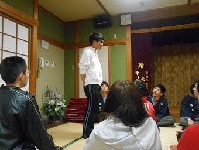
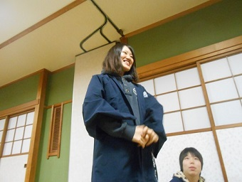
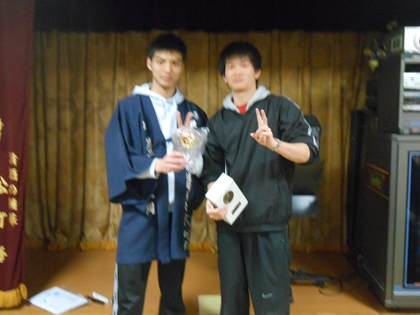
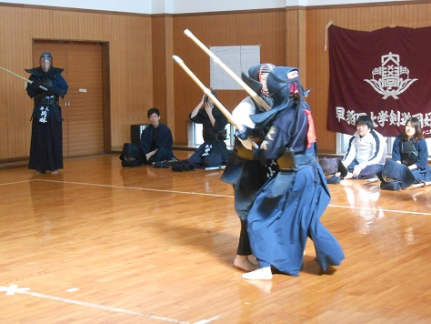

|
春合宿写真続き（三日目～五日目）です！ 三日目稽古。さかにゃーによるストレッチ拷問。 そんなとこで寝るな。 男を次から次へととっかえひっかえする副務主任。 二女写真（はぁと☆彡）右下の子はちょっぴりガタイのいいマル子ちゃんっていうの(//ω//) 一男・小林君と二女、もっちーこと望月さんが帰還するので記念写真。ｾｸｽｨｰﾎﾟｰｽﾞ。 ま、真面目に稽古もしてますよ（震え声）三日目は追い込みや掛かり稽古など少しきつめのメニューを中心に行いました。 そして夕方からOB・OGの先輩方も合流いたしました！（樋口先輩・岡林先輩・新保先輩・井上先輩・出川先輩・柳先輩）※青木先輩は四日目から   また一年・杉山、二年・仙石、増田も本日から参加。 翌日のチーム戦のメンバー発表です。カオスなチームもちらほら。 そして事前に取っていたアンケートでベスト同期、ワースト同期を発表。５２期（一年）は西川君がベストに。おめでとう！（ワーストは中村。夏のベスト同期からの華麗な転落。）  51期（二年）からは副務主任・伊東がベストに。ちなみに私はワーストでした☆死にてーwwwwwwwwww ベストOB・OGは出川先輩が。嬉しそうです(笑) ワーストOB・OGはもちろんこの人。ダントツの票を獲得していらっしゃいました。 ベスト・ワーストの発表も終えて就寝に。明日からの激務に備えてカリポリ（駄菓子）を貪る副務陣。 四日目朝。なぜに黒ひげ危機一髪なんですか・・・？ 「夢を叶えろォｯ！！渚ｧ！！！」（道場にて樋口先輩が『CLANNAD』最終回をエンドレスリピートしていました） チームメンバーが書かれた名札？のようなもの。みんなわかるかな？ ひでぇ名前だ(笑) 会内試合は四チームによるリーグ戦です。優勝と裏優勝（ﾋﾞﾘ）を決めます！ 開会式。選手宣誓は一年・工藤。合宿中はコナンネタの嵐だった彼。せやかて工藤。 ここで青木先輩がご到着に。即試合に駆り出されます(笑) 試合開始です！ 最初は工藤ｖｓやしけんこと林（二年・副務）  小山ｖｓ関口 仁義なき一女の争い 青木先輩ｖｓ長山（一年） 到着して早々いきなり試合でお疲れ様でした・・・ 田中ｖｓ坂庭 女子ルール適用で坂庭は田中に一本最初からとられているという相手によっては鬼畜なルール。 余裕の主将。 （真剣） 大谷？の二刀流 
樋口先輩？垂れネーム変えるだけなのに大谷は本気で嫌な顔をしていました(笑) 最終試合にて荒ぶる大谷（こと樋口先輩）。くっそつええｗ 
試合結果発表。一位は有象無象チーム、ﾋﾞﾘはキャンセル待ちチームに。 一位チーム、有象無象（オーナー：別當）女子代表、貫録の勝利 二位チーム、OTA（オーナー：石丸）人文字で”OTAKU”を作成(笑) 三位、早稲田大学剣道同好会（オーナー：田伏）「真面目」がコンセプトです。（林と中村は絶対認めない） 四位（ﾋﾞﾘ）、キャンセル待ち（オーナー：坂庭） 土下座で謝罪？ ここから学年別に記念写真。まずは52期（一年）。今回は来てくれる人が多くて良かったです！ こちらは幹部、５１期（二年）。 OB・OGの先輩方、50期（三年）の写真です。 ソチ五輪のスケートの真似らしいです(笑) 最後にみんなで。試合お疲れ様でした！！ 五日目、最終日の朝。疲れがたまってみんないい感じに死にかけてますね。 とか思ってたら突然落語、謎かけ大会が。やしけん先生による指導付き。 落語もほどほどに先輩方は先に帰路に。ありがとうございました！ 見送るやしけん ※グロ注意 最後のミーティングも終了し、全日程消化しました！皆さん本当にお疲れ様でした！ 次は待ちに待った新歓ですね！ポスター作り終わらないよ！助けて！ (※写真へのコメントは全て管理人がしております。) |